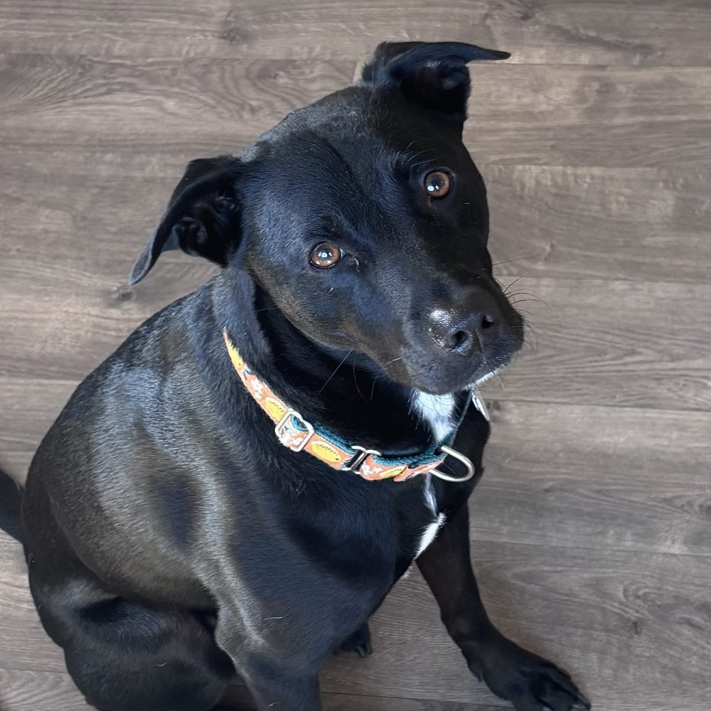
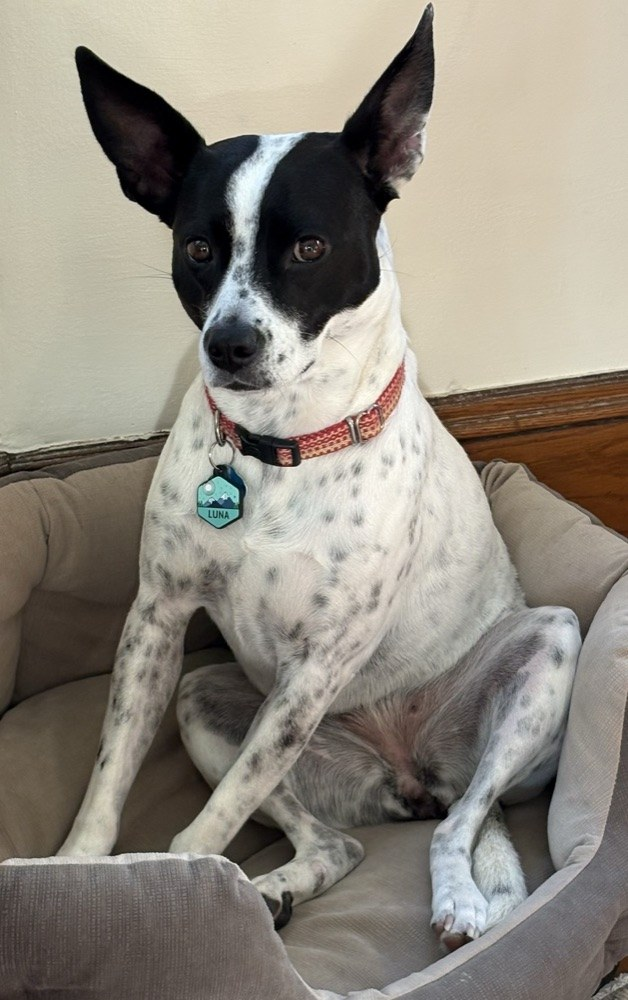

Meet Mango & Luna
I adopted two dogs during my PhD. Mango is a 6-year-old pitbull/cattle dog mix and Luna is a 3-year-old cattle dog/rat terrier mix. They share a natural athletic ability but Mango prefers to lie on the couch as much as possible, while Luna has a hard time staying still.

